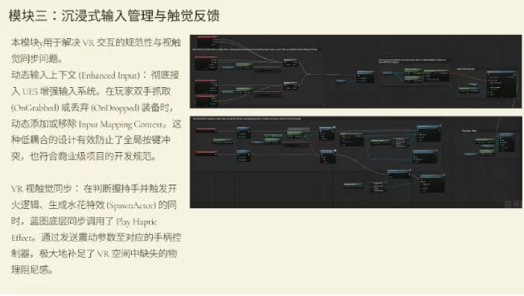
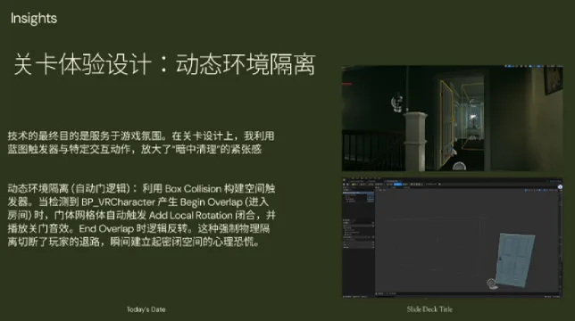
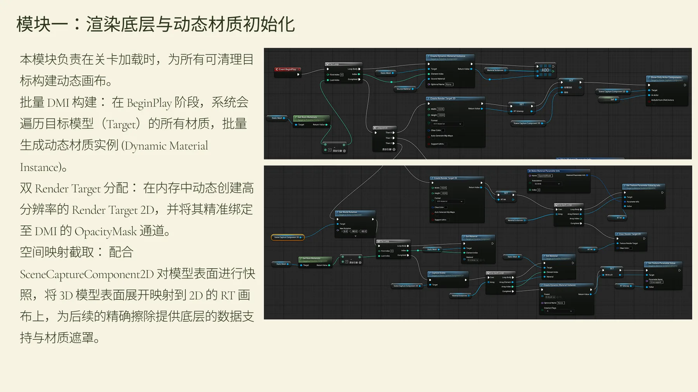
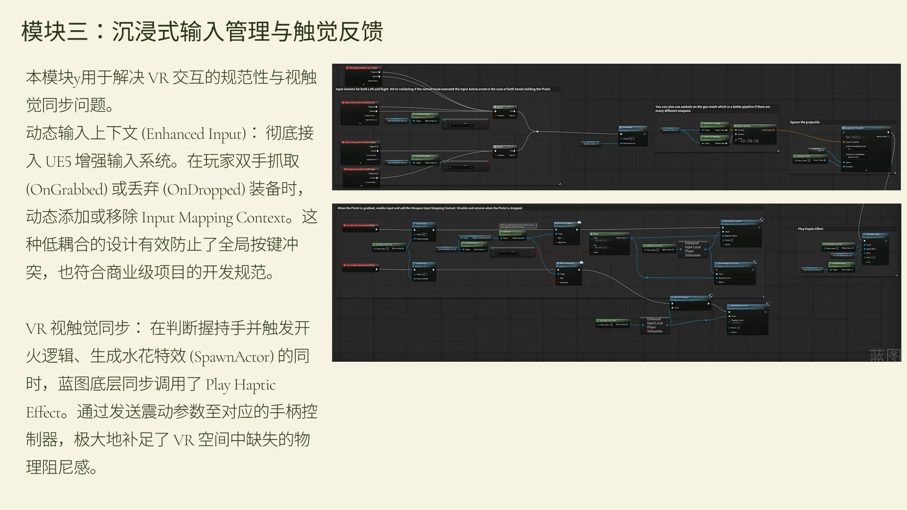
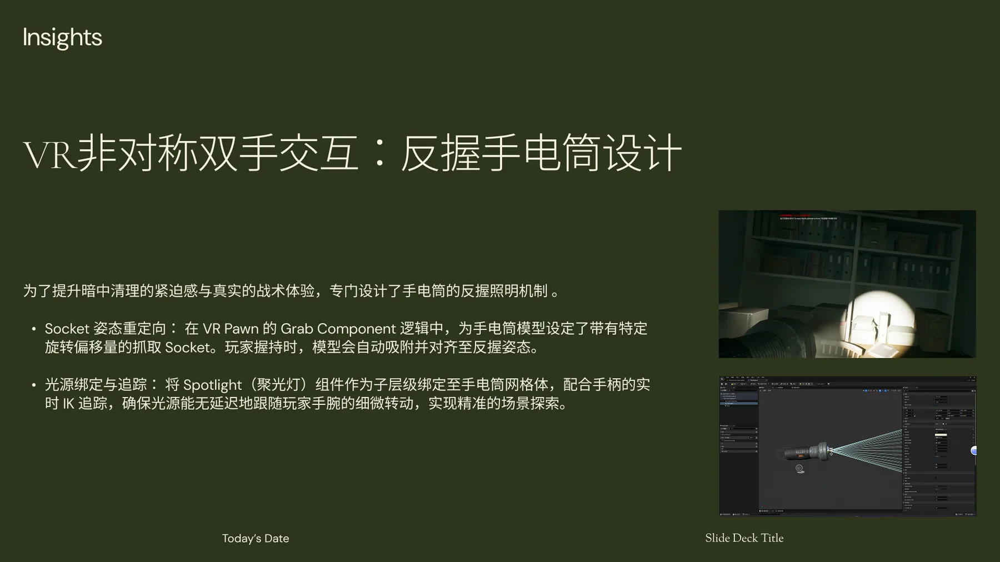
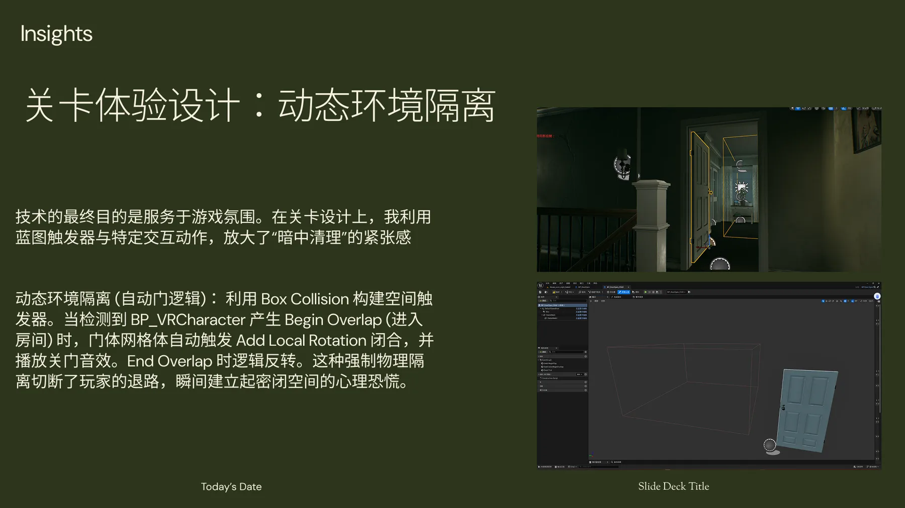
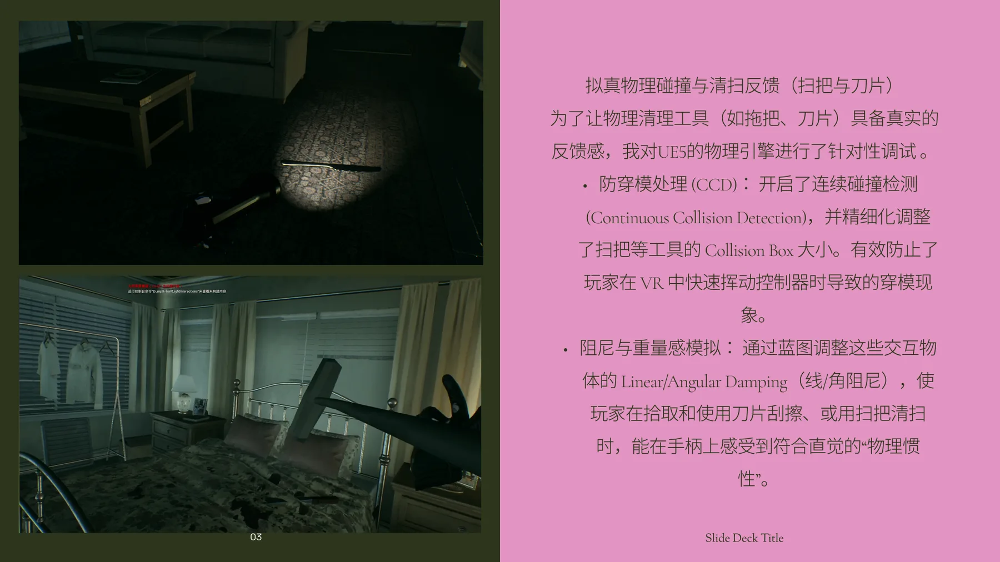
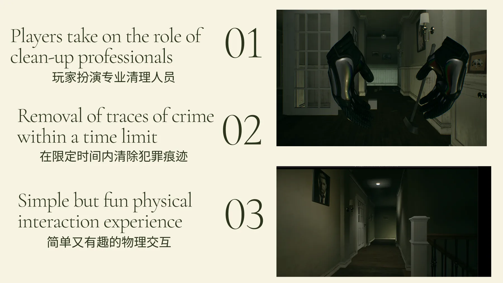
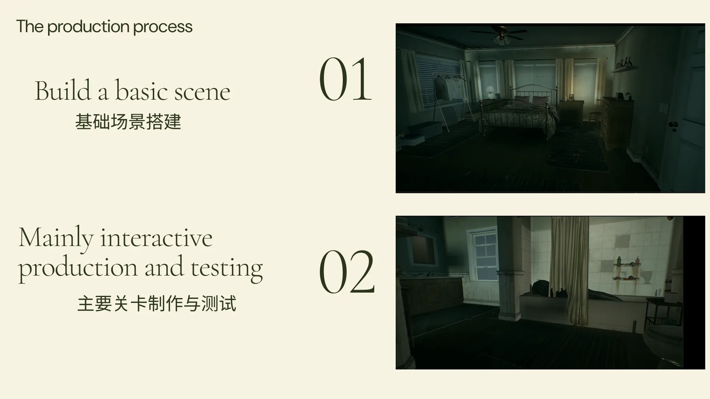

Return to Zero
A VR puzzle level with real-time erasing and asymmetric two-hand controls.
 Watch video
Watch video
Return to Zero: Level Demo
Original video/BilibiliOriginal production notes · Chinese
实时擦除与双手交互






Previous project notes
一、作品展示视频
核心技术展示
B 站视频基于 Render Target 的实时污渍擦除系统_哔哩哔哩_bilibilib23.tv ↗游戏效果展示
B 站视频【UE5/VR】别留下任何痕迹！我开发了一款“犯罪现场清道夫”高压模拟器_哔哩哔哩bilibili_演示bilibili.com ↗二、作品拆解












